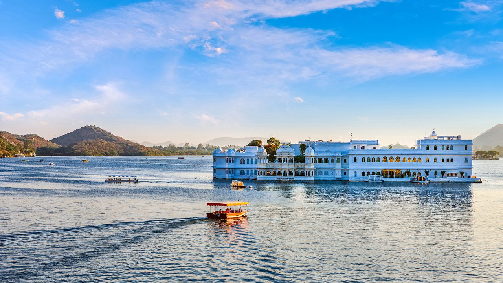

City Palace: The Royal Abode
City Palace is a magnificent complex that showcases the grandeur of Udaipur's royal heritage.
Fun Fact:
~It was built over 400 years and is a blend of Rajasthani and Mughal architecture!
Things to Explore at City Palace:
-
The Museum:
Explore the museum housing artifacts from the royal family.
-
The Courtyards:
Stroll through the beautiful courtyards adorned with intricate carvings.
-
The Crystal Gallery:
Marvel at the exquisite collection of crystal artifacts.
-
The Viewpoints:
Enjoy panoramic views of Lake Pichola and the city from various viewpoints.
-
The Light and Sound Show:
Experience the evening show that narrates the history of Udaipur.
Why Visit City Palace?
!Because it’s a journey through Rajasthan’s royal past, filled with art, culture, and breathtaking views!

Lake Pichola: The Serene Jewel
Lake Pichola is a picturesque lake that reflects the beauty of Udaipur's landscape.
Fun Fact:
~It was created in the 14th century and is one of the largest lakes in Udaipur!
Things to Explore at Lake Pichola:
-
Boat Rides:
Enjoy a serene boat ride on the lake, taking in the stunning views.
-
Jag Mandir Island:
Visit the beautiful island palace located in the middle of the lake.
-
Sunset Views:
Experience breathtaking sunsets over the lake, perfect for photography.
-
Lakeside Cafes:
Relax at lakeside cafes offering local delicacies and refreshments.
-
Cultural Performances:
Attend cultural shows that often take place near the lakeside.
Why Visit Lake Pichola?
!Because it’s a tranquil escape that offers a glimpse into Udaipur’s natural beauty and cultural richness!
Jagdish Temple: The Divine Marvel
Jagdish Temple is a stunning Hindu temple dedicated to Lord Vishnu, showcasing intricate carvings and architecture.
Fun Fact:
~It was built in 1651 and is one of the largest temples in Udaipur!
Things to Explore at Jagdish Temple:
-
The Main Shrine:
Admire the beautifully carved main shrine dedicated to Lord Vishnu.
-
The Pillars:
Marvel at the intricately carved pillars that adorn the temple.
-
The Courtyard:
Explore the peaceful courtyard surrounded by smaller shrines.
-
The Festivals:
Experience vibrant festivals celebrated with great enthusiasm at the temple.
-
The Spiritual Atmosphere:
Feel the divine energy and tranquility that envelops the temple.
Why Visit Jagdish Temple?
!Because it’s a spiritual haven that offers a glimpse into Udaipur’s rich cultural and religious heritage!
Sajjangarh Palace: The Monsoon Retreat
Sajjangarh Palace, also known as the Monsoon Palace, is a hilltop palace offering panoramic views of Udaipur and its surroundings.
Fun Fact:
~It was built in the late 19th century as a monsoon retreat for the royal family!
Things to Explore at Sajjangarh Palace:
-
The Scenic Views:
Enjoy breathtaking views of the city and surrounding hills from the palace.
-
The Architecture:
Admire the unique blend of Rajasthani and Mughal architectural styles.
-
The Gardens:
Stroll through the beautiful gardens surrounding the palace.
-
The Wildlife Sanctuary:
Explore the nearby Sajjangarh Wildlife Sanctuary, home to diverse flora and fauna.
-
The Sunset Point:
Experience mesmerizing sunsets that paint the sky in vibrant hues.
Why Visit Sajjangarh Palace?
!Because it’s a perfect blend of history, nature, and stunning vistas that make it a must-visit in Udaipur!

Fateh Sagar Lake: The Tranquil Oasis
Fateh Sagar Lake is a serene lake surrounded by hills, offering a peaceful escape from the city’s hustle and bustle.
Fun Fact:
~It was built in the 17th century and is one of the largest artificial lakes in Udaipur!
Things to Explore at Fateh Sagar Lake:
-
Boating:
Enjoy boating on the lake, with options for paddle boats and motorboats.
-
Nehru Garden:
Visit the beautiful island garden located in the middle of the lake.
-
Sunset Views:
Experience stunning sunsets that reflect on the calm waters of the lake.
-
Lakeside Cafes:
Relax at lakeside cafes offering local snacks and refreshments.
-
Cultural Events:
Attend cultural events and festivals celebrated near the lake.
Why Visit Fateh Sagar Lake?
!Because it’s a tranquil oasis that offers a perfect blend of natural beauty and cultural experiences!
Bagore Ki Haveli: The Cultural Gem
Bagore Ki Haveli is a historic haveli that showcases the rich cultural heritage of Udaipur through its architecture and performances.
Fun Fact:
~It was built in the 18th century and is now a museum displaying artifacts from the royal era!
Things to Explore at Bagore Ki Haveli:
-
The Museum:
Explore the museum housing artifacts, costumes, and paintings from the royal family.
-
The Courtyard:
Stroll through the beautiful courtyard adorned with traditional decorations.
-
Cultural Performances:
Attend evening performances showcasing Rajasthani dance and music.
-
The Rooftop View:
Enjoy panoramic views of Lake Pichola and the city from the rooftop.
-
The Art Gallery:
Visit the art gallery featuring contemporary and traditional artworks.
Why Visit Bagore Ki Haveli?
!Because it’s a cultural gem that offers a glimpse into Udaipur’s rich heritage and vibrant traditions!
Haldi Ghati: The Historic Battlefield
Haldi Ghati is a historic valley known for the famous battle fought between Maharana Pratap and Mughal forces.
Fun Fact:
~It is named after the yellow turmeric (haldi) that grows abundantly in the region!
Things to Explore at Haldi Ghati:
-
The Memorial:
Visit the memorial dedicated to Maharana Pratap, honoring his bravery and valor.
-
The Museum:
Explore the museum showcasing artifacts and exhibits related to the battle.
-
The Scenic Views:
Enjoy breathtaking views of the surrounding hills and valleys.
-
The Cultural Events:
Attend cultural events and reenactments of the historic battle.
-
The Local Cuisine:
Savor traditional Rajasthani dishes at nearby eateries.
Why Visit Haldi Ghati?
!Because it’s a historic battlefield that tells the tale of bravery, sacrifice, and the rich heritage of Rajasthan!
Kumbhalgarh Fort: The Great Wall of India
Kumbhalgarh Fort is a UNESCO World Heritage Site known for its massive walls and stunning architecture.
Fun Fact:
~It has the second-longest wall in the world after the Great Wall of China!
Things to Explore at Kumbhalgarh Fort:
-
The Fort Walls:
Walk along the fort walls that stretch over 36 kilometers.
-
The Palaces:
Explore the palaces within the fort, showcasing intricate carvings and architecture.
-
The Temples:
Visit the ancient temples dedicated to various deities.
-
The Wildlife Sanctuary:
Explore the nearby Kumbhalgarh Wildlife Sanctuary, home to diverse flora and fauna.
-
The Sunset Views:
Experience mesmerizing sunsets from the fort, painting the sky in vibrant hues.
Why Visit Kumbhalgarh Fort?
!Because it’s a majestic fort that offers a glimpse into Rajasthan’s rich history and architectural marvels!